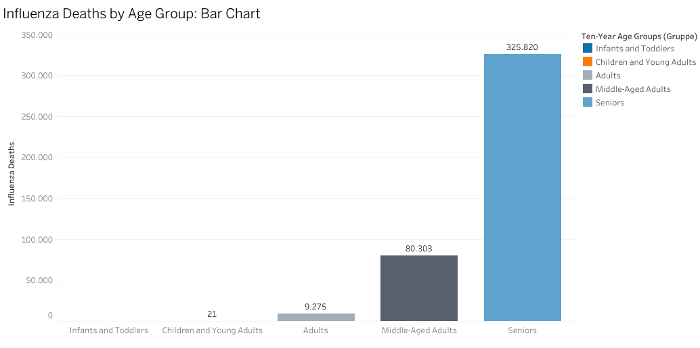
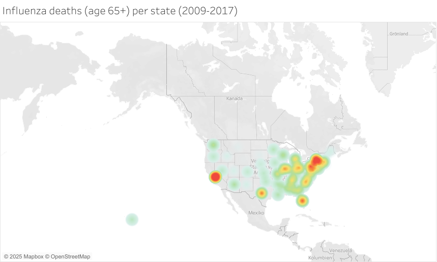
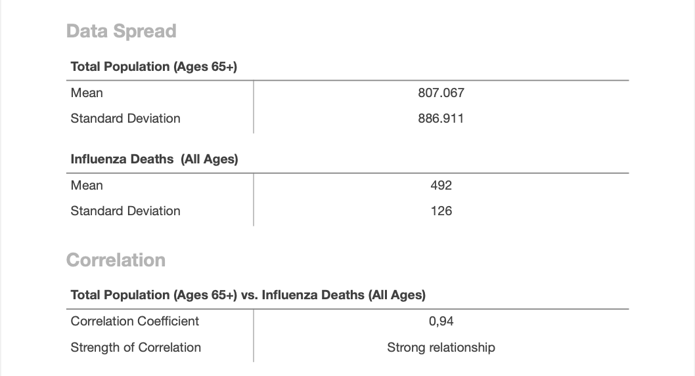
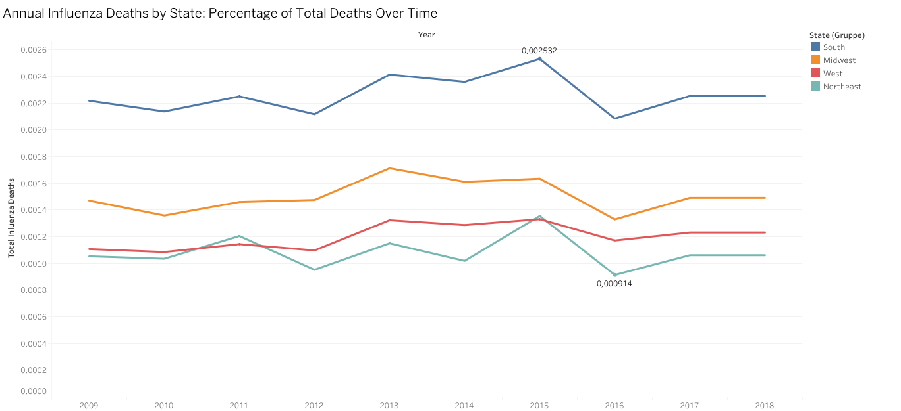
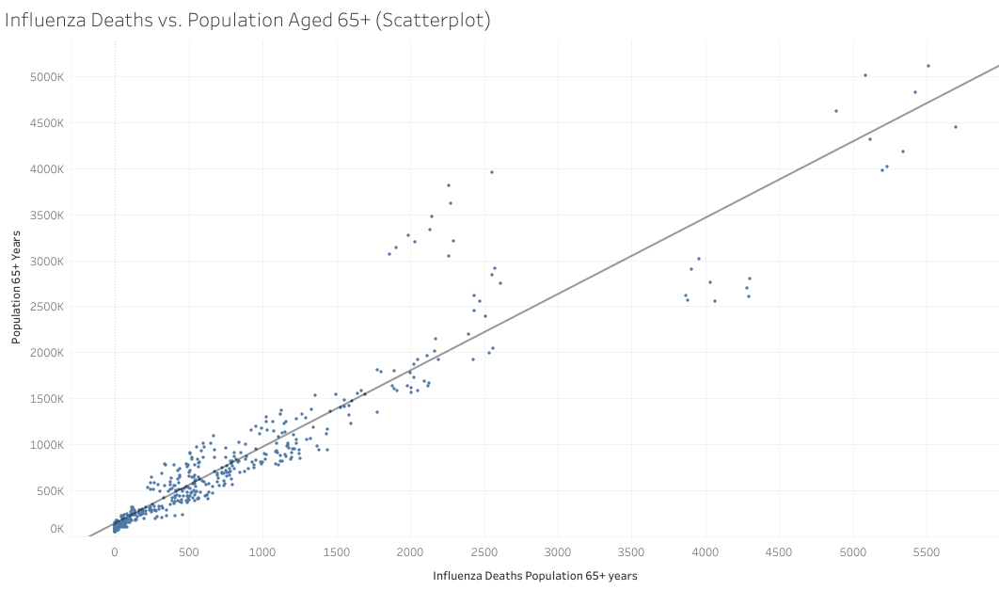
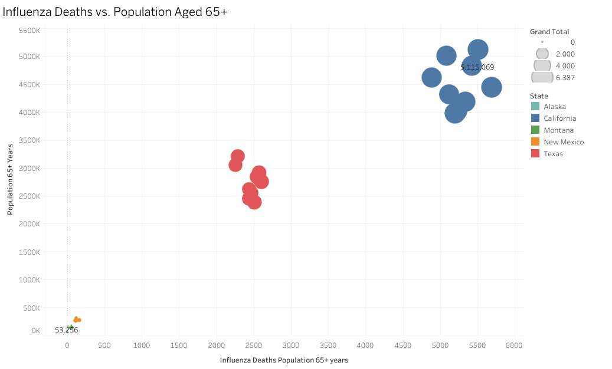

📚 Skills
- Business requirements translation
- Data cleaning & transformation
- Statistical analysis & forecasting
- Visual storytelling & presentation
🛠 Tools
- Excel
- Tableau
📋 Procedures
- Data integration & hypothesis testing
- Forecasting flu trends
- Visualizing risks & mortality rates
- Presenting insights in Tableau
Project Overview
📌 Context:
- Every flu season, hospitals face staffing challenges due to increased patient load, especially among high-risk populations.
❓ Key Questions:
- Which states are most impacted?
- How do age, population density, and vaccinations affect staffing?
- When do flu peaks occur?
✅ Why It Matters:
- Prevents understaffing (avoiding overwhelmed hospitals)
- Reduces overstaffing (efficient resource use)

View this chart on Tableau PublicKey Insights
- 90% of flu deaths occur in the 65+ age group
- High-risk states: California, Florida, Texas
- Low vaccination = Higher flu deaths
- Strong correlation (r = 0.94) between age & flu deaths
- Higher population density = faster flu spread

View this chart on Tableau PublicData Spread & Correlation

Visualizing the Findings
📊 Flu Trends Over Time
- Flu deaths fluctuate yearly & vary by region
- Some states experience sharper seasonal spikes
- Staffing must be flexible & data-driven
📈 Correlation Between Age & Flu Deaths
- Aging populations experience higher flu mortality
- Staffing must align with demographic risk factors

View Line Chart on Tableau Public
View Scatterplot on Tableau PublicRecommendations & Next Steps
📍 Strategic Actions for GameCo
- Prioritize high-risk states (California, Florida, Texas)
- Adjust staffing based on flu season peaks
- Target under-vaccinated regions for better prevention
🔍 Next Steps
- Pilot a flexible staffing program in high-risk areas
- Develop early warning systems for flu outbreaks
- Refine staffing predictions with vaccination effectiveness analysis

View this chart on Tableau Public